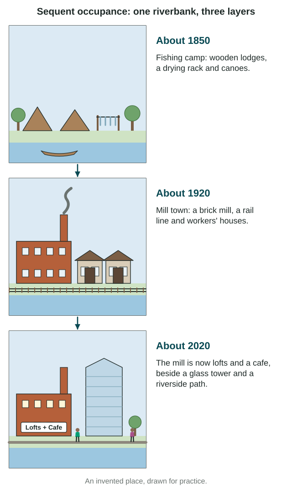

Stand on any street and look around. Some of what you see was made by nature: a hill, a river, the sky. Almost everything else was made by people. Geographers read those human marks the way a historian reads old letters, to learn who lived in a place and what they valued.
The cultural landscape
The cultural landscape is the land as people have changed it. It includes buildings, fields, roads, fences, signs, monuments and places of worship. It sits on top of the physical landscape, which is the land as nature made it: landforms, rivers, soil, climate and plants that grew on their own.
The difference matters on the exam, because readers have marked answers wrong for describing mountains when the question asked about the cultural landscape. Take the Douro Valley in Portugal at the local scale. The Douro River and the steep slopes are physical. The rows of grapevines planted on those slopes, the stone walls that hold them and the wine estates are cultural.
Culture traits show up in the landscape in many ways:
- Religion: churches, mosques, temples, shrines and cemeteries.
- Language: the words on signs and the names given to streets.
- Farming and industry: field shapes, barns, mills and factories.
- Architecture: the style and materials of buildings.
Traditional and postmodern architecture
| Traditional architecture | Postmodern architecture | |
|---|---|---|
| When | Long-standing styles, passed down for generations | From about the 1970s on |
| Materials | Usually local: earth, stone, wood, thatch | Steel, glass and concrete, often mixed with older-looking details |
| Look | Fits one place and one culture | Mixes styles on purpose; similar buildings appear in many cities |
| Example | Adobe homes at Taos Pueblo, New Mexico; Navajo hogans, many-sided homes (often six or eight sides) with an east-facing door | 550 Madison Avenue in New York (1984), a granite-clad tower with a notched top borrowed from an old cabinet |
Sequent occupance: landscapes in layers

Sequent occupance is the idea that each group that occupies a place leaves marks, and later groups keep, change or reuse them. A landscape is never wiped clean; it builds up in layers.
St. Anthony Falls on the Mississippi River in Minneapolis, Minnesota, shows the layers at the local scale. The falls were a sacred place to the Dakota people, who call them Owámniyomni. In the 1800s, sawmills and then flour mills crowded the falls and made Minneapolis a milling city. During the 1900s the mills closed one by one (the Washburn A Mill in 1965, the Pillsbury A Mill, the last, in 2003); the ruins of the Washburn A Mill became the Mill City Museum in 2003, others became condos, and parks and trails now line the river. Each layer is still visible, and Dakota groups today work to restore their presence at the falls.
Ethnicity, gender and space
Ethnicity is identity with a group that shares ancestry, history and cultural traditions. It is cultural, not biological, and people name their own ethnic identity. An ethnic neighborhood is an area where one ethnic group is concentrated.
Ethnic neighborhoods form for two kinds of reasons. Some come from inside the group: newcomers settle near relatives (chain migration, from Unit 2) and near shops, services and places of worship in their own language. Others come from outside: laws or hostility limit where a group may live. San Francisco's Chinatown, which began in the 1800s, grew from both. Little Saigon in Westminster, California, grew after 1975, when many refugees from Viet Nam settled in Southern California and relatives followed. Its signs in Vietnamese, its noodle houses and its Buddhist temples mark the group on the land.
Ideas about gender shape space too. For many years, many restaurants in Saudi Arabia had separate sections and entrances for families and for single men; in 2019 the government said separate entrances were no longer required. As more women in many countries entered paid work, child care, transit and workplaces changed to fit. When ideas about who belongs where change, buildings change with them.
Indigenous communities and lands carry their own landscapes: hogans on the Navajo Nation, which spreads across parts of Arizona, New Mexico and Utah, and carved poles made by First Nations artists in towns along Canada's Pacific coast.
Worked example: read a street. You see a street with signs in Vietnamese and English, a noodle house and a temple with a curved tile roof.
- Describe what you see: signs in two languages, food and a place of worship from one culture.
- Name the concept: an ethnic neighborhood in the cultural landscape.
- Explain with a link: Vietnamese Americans settled near family, so they built businesses and a temple for their community.
- Say what the scene cannot show: how many residents belong to the group. For that you need census data.